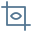

Languages & Environment
언어 · 개발 환경
C++
프로젝트 활용Python
프로젝트 활용Linux
프로젝트 활용Git
프로젝트 활용
ROS 명령 연동과 인식 파이프라인을 구성하며 사용했습니다. 팀원들과 Linux·ROS를 학습하고 GitHub로 코드를 공유했습니다.
배달로봇 · 팀 학습과 협업01 · ABOUT / 본인소개
학부에서 드론, 자율주행 배달로봇, 한국어 Lip Reading을 만들며 센서·제어·인식 모델이 연결되는 과정을 경험했습니다.
처음 접한 ROS와 Linux를 팀원들과 학습하고, 문서와 예제를 바탕으로 기능을 구현했습니다. 화면의 상태와 실제 움직임을 비교하며 확인한 경험을 이곳에 담았습니다.
이력서 기재 기준
교내 대상 2회 · WE-Meet 최우수상 1회
팀 프로젝트 수상
대표 3 · 추가 학부 4 · 졸업 후 2
웹·앱은 제품별 한 묶음으로 집계
02 · TECH STACK
학부 프로젝트에서 학습하고 사용한 기술과 적용 맥락입니다.
표시는 기술을 사용한 맥락입니다. 독립 수행 능력이나 숙련도 점수가 아닙니다.
Languages & Environment
ROS 명령 연동과 인식 파이프라인을 구성하며 사용했습니다. 팀원들과 Linux·ROS를 학습하고 GitHub로 코드를 공유했습니다.
배달로봇 · 팀 학습과 협업Robotics
드론의 목표 고도 명령 노드를 작성하고 센서·내비게이션을 연결했습니다. 배달로봇에서는 TF와 기존 SLAM·DWA를 조정·통합했습니다.
드론 · ROS / MAVROS 연동MCU & Boards
Arduino CAN 통신과 ATmega128 다마고치 과제를 수행했습니다. 드론에는 Jetson Nano를 사용했습니다.
교과 프로젝트 · 실내 자율비행 드론Vision & Deep Learning

Lip Reading 팀에서 입술 전처리, 특징 추출·시계열 모델과 후처리를 함께 수행했습니다. SequenceMatcher로 제한된 단어 후보를 연결했습니다.
Lip Reading · 데이터와 모델 구성03 · PROJECTS
팀의 결과, 직접 맡은 일, 남은 한계를 구분했습니다.
 실제 프로젝트 기록
실제 프로젝트 기록T265·D435i 카메라 2종과 Jetson Nano·Pixhawk 4를 연동해, GPS 없이 단순 실내 환경에서 목표 비행을 확인했습니다.
호실 번호 인식에서 목적지 도착까지. 건물 안에서 방을 찾는 수고를 줄이기 위한 배달로봇입니다.
224×224 입술 영상 10프레임으로 12개 음절을 분류하고, 사전 정의 단어 후보로 연결했습니다.
MORE PROJECTS
위 세 개의 대표 사례 외에도 학부 수업과 졸업 후 수행한 프로젝트가 있습니다.
공학설계
영상 디노이징 프로젝트
암호학
Handshake protocol 구현
차량용통신
Arduino를 이용한 CAN 통신 구현
마이크로프로세서응용공학
ATMEGA128을 이용한 다마고치 프로젝트
BG-APP · WEB
청소업체를 위한 앱·웹 프로젝트
WEB · APP
매장관리·조판지 애플리케이션
04 · PROBLEM SOLVING
관찰한 현상과 실제로 조정한 내용을 중심으로 정리했습니다.
#01 / 배달로봇 · 모터 제어
#02 / 배달로봇 · 위치 추정
#03 / Lip Reading · 데이터
05 · ARCHIVE
프로젝트를 뒷받침하는 코드, 영상, 문서를 모았습니다.
CODE
공개 프로필 · maze4995
공개 개발 중 스냅샷 · 최종 코드 전체와 일치 여부 미확인
DEMO
YouTube · 사전 촬영 비행 기록
Google Drive · 큰 숫자 종이를 사용한 시연
DOCUMENT
Google Drive · PDF
Google Drive · 슬라이드
Google Drive · PDF
Google Drive · 슬라이드
외부 자료는 새 탭으로 열립니다. Google Drive 자료는 원본 권한에 따라 로그인이 필요할 수 있습니다.
06 · AWARDS
팀 프로젝트로 함께 이룬 세 번의 수상입니다.
2023.12.01
국민대학교 · 실내 자율비행 드론 / K-SNDroneTech
2024.06.04
국민대학교 · 자율주행 배달로봇 / NextGen Deep Delivery
팀 프로젝트 수상
07 · EDUCATION
전자공학부 · 학사
학부에서 이어 온 관심
전자공학을 기반으로 로봇 시스템의 센서·제어 연동과 영상 인식을 경험했습니다. 전자공학종합설계에서는 한국어 Lip Reading 시스템을 팀원과 공동으로 수행했습니다.
종합설계 프로젝트 보기 ↗08 · ACTIVITIES
학부 프로젝트를 통해 함께 배우고 결과를 소개한 경험입니다.
K-SNDroneTech 팀의 드론 프로젝트로 전시에 참여했습니다. 차세대통신 혁신융합대학 컨소시엄의 공동 부스에서 학부 프로젝트 결과를 소개했습니다.
학교 전시 기사 (새 탭)드론 팀에서는 ROS·Linux·MAVROS 자료 조사와 기술 선택을, 새로운 배달로봇 팀에서는 ROS·C++ 학습과 GitHub 협업을 이끌었습니다.
배달로봇 팀에서 맡은 일 ↗09 · CONTACT
로봇 소프트웨어와 AI 분야를 향한 학습과 프로젝트 기록을 이어갑니다.